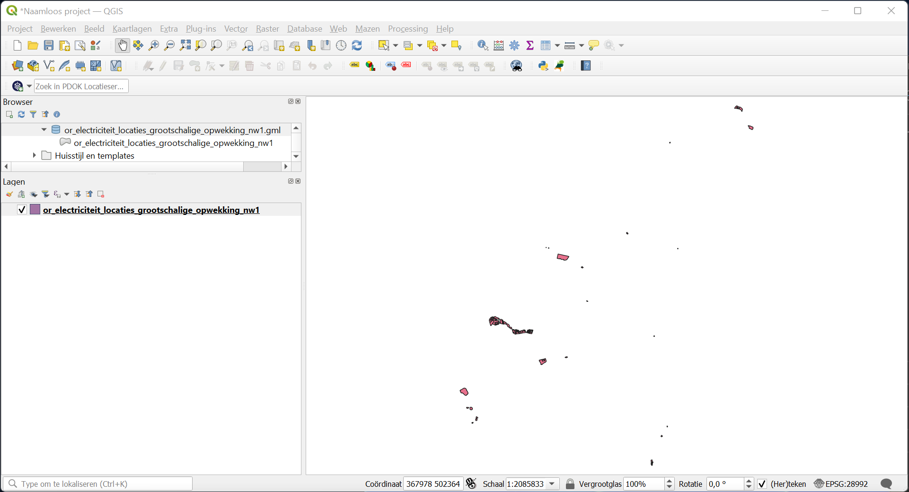
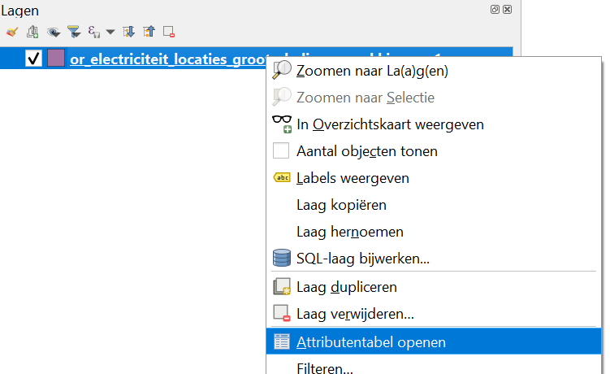
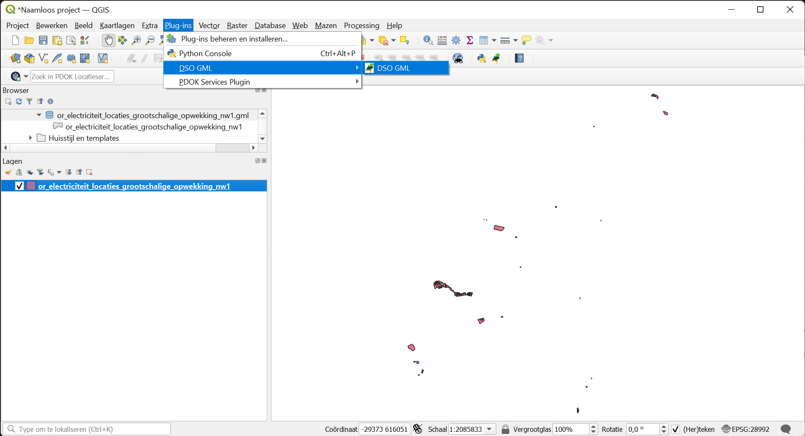
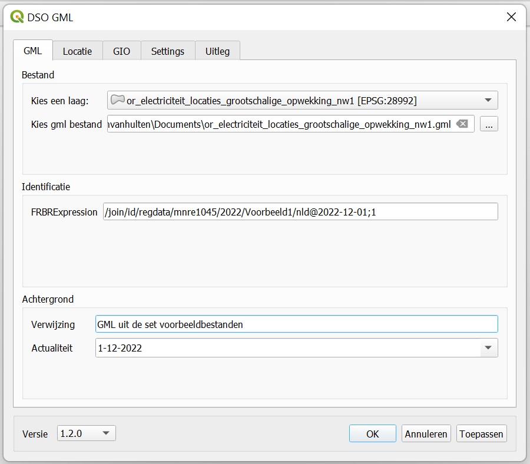
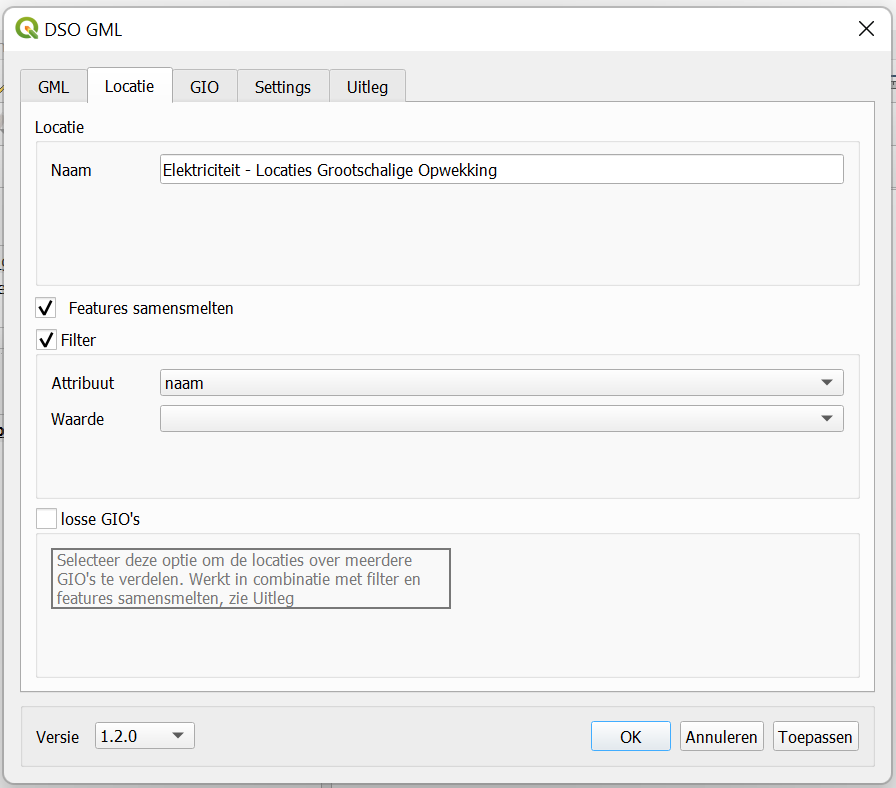
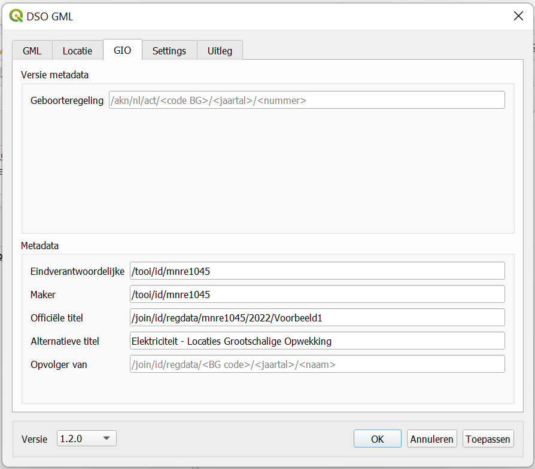
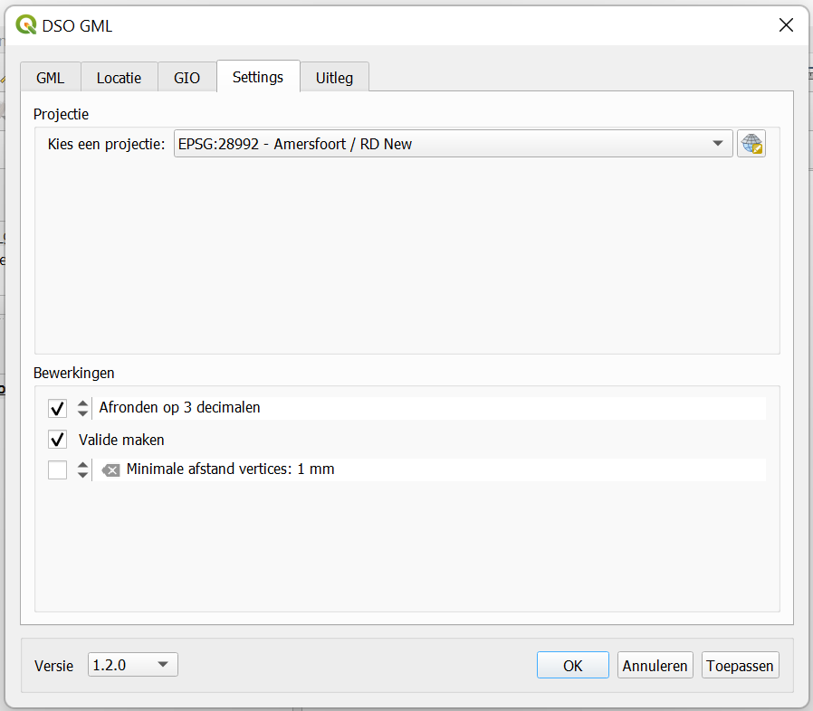
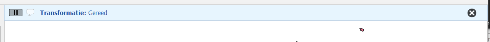
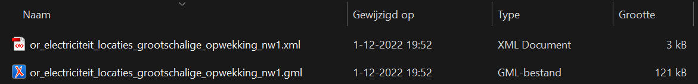

Voorbeeld 1: stand alone GIO
Voorbeeldbestand in QGIS
In de repository ‘GitHub / Geonovum / dso_gio_qgis_plugin’, folder ‘Voorbeeld 1’ is het bestand ‘or_electriciteit_locaties_grootschalige_opwekking_nw1.gml’ te vinden. Het is aangeleverd door Tennet, eigendom van de staat en gerund door Ministerie van Economische Zaken en Klimaat. We gebruiken dit bestand om een eenvoudig niet consolideerbaar ‘stand alone’ voorbeeld te maken.
Open het bestand in QGIS, start een nieuw project en voeg de laag ‘or_electriciteit_locaties_grootschalige_opwekking_nw1’ toe.
Doorde muis op de toegevoegde kaartlaag te plaatsen en dan op de rechtermuisknop te klikken wordt de optie ‘Attributentabel openen’ zichtbaar. Kies deze.

De attributentabel wordt nu geopend:
Het venster met de attributentabel laat zien dat de kaartlaag in totaal 21 locaties met naam bevat. Dit nemen we nu voor kennisgeving aan. Sluit de tabel nu.
Start nu de DSO GML Plug-in:
Invullen tab GML
De plug-in wordt geopend in het tabje ‘GML’. Bij ‘Bestand’ is de laag al ingevuld onder ‘Kies een laag’ en er wordt ook meteen een standaard uitvoerpad ingevuld onder ‘Kies gml bestand’:
De FRBRExpression moet ingevuld worden. Als deze niet vooraf al bekend is uit bijvoorbeeld een bijgeleverd bestand of niet wordt geleverd door de plansoftware, dan moet deze opgebouwd worden. Het format is zoals in grijs aangegeven is in het veld: /join/id/regdata/<overheid>/<datum_work>/<overig>[‘/’<taal>]’@’<datum_expr>[‘;’<versie>][‘;’<overig>]
Vullen we dit in dan wordt:
<overheid> = Ministerie van Economische Zaken en Klimaat = mnre1045
<datum_work> = datum/jaar waarop het werk is aangeleverd. We kiezen hier voor het jaar = 2022
<overig> = Voorbeeld1
<taal> = nld
<datum_expr> = huidige datum in YYYY-MM-DD format = 2022-12-01
<versie> = 1
<overig> (2) = leeg, slaan we nu over
Voor Achtergrond / Verwijzing vullen we nu ‘GML uit de set voorbeeldbestanden’ in.
De Achtergrond / Actualiteit staat al op de datum van vandaag en dat laten we zo staan.
Invullen tab Locatie
Klik op het tabje ‘Locatie’.
De ‘Naam’ die in de GIO wordt opgenomen wordt automatisch gegenereerd op basis van de bestandsnaam. In dit geval wordt dat ‘or_electriciteit_locaties_grootschalige_opwekking_nw1’. Maar deze wijzigen we naar ‘Elektriciteit – Locaties Grootschalige Opwekking’ voor een iets vriendelijker beschrijving.
Vervolgens kiezen we voor de combinatie van ‘Features samensmelten’, ‘Filter’ aan. Als ‘Attribuut’ uit de kaartlaag kiezen we de ‘naam’ maar selecteren we niets onder ‘Waarde’. ‘Losse GIO’s’ selecteren we ook niet. Dit levert straks een GIO op waarin alle 21 locaties die in de kaartlaag gedefinieerd zijn (en die we in de attributentabel al hebben gezien) op basis van hun naam terug te vinden zijn.
Overigens zijn die namen voor de diverse locaties al te zien door op het pijltje achter ‘Waarde’ te klikken. We kijken hier alleen, dus selecteer niets.
Invullen tab GIO
Klik op het tabje ‘GIO’.
Deze GIO hoeft niet geconsolideerd te worden; het is een eenvoudig ‘stand alone’ voorbeeld. Daarom heeft het ook geen ‘Geboorteregeling’ en de sectie ‘Versie metadata’ kan dus leeg blijven. Voor een valide GIO dient de geboorteregeling wel altijd ingevuld te worden.
In de sectie ‘Metadata’ wordt de ‘Officiële titel’ automatisch ingevuld. Deze laten we staan.
Voor ‘Eindverantwoordelijke’ en ‘Maker’ vullen we hetzelfde in. We hadden het Ministerie van Economische Zaken en Klimaat al eerder geïdentificeerd met ‘mnre1045’, dus in beide velden wordt nu ‘/tooi/id/mnre1045’ ingevuld.
De ‘Alternatieve titel’ is de titel die zichtbaar wordt als de kaart van de GIO niet getoond kan worden. Maak deze gelijk met de ‘Locatie / Naam’ zoals we die in het tabje ‘Locatie’ al hadden benoemd.
Omdat dit voorbeeld een ‘stand alone’ voorbeeld is, is het dus ook geen opvolger van een vorige versie. We kunnen ‘Opvolger van’ dan ook leeg laten.
Invullen tab Settings
Klik nu op het tabje ‘Settings’.
In de sectie ‘Projectie’ is het veld ‘Kies een projectie’ al ingevuld met het Nederlandse Coördinaat Referentie Systeem voor het Rijksdriehoeksstelsel. De data in de GML was al in RD-formaat aangeleverd, dus er zal niet veel geprojecteerd hoeven worden.
In de sectie ‘Bewerkingen’ laten we ‘Afronden op 3 decimalen’ aan staan. Ook wijzigen we het aantal decimalen niet. Voor het DSO is afgesproken dat de RD coördinaten met 3 decimalen worden aangeleverd. De coördinaten worden hierdoor met een precisie van 1 mm opgenomen.
Het veld ‘Valide maken’ is standaard aangevinkt. Laat deze selectie staan, want hierdoor wordt de te creëren GIO gevalideerd waardoor er actief naar bepaalde fouten gezocht wordt. Mochten deze fouten gevonden worden dan worden ze bij het genereren van de GIO gerapporteerd.
Het veld ‘Minimale afstand vertices: x mm’ laten we gedeselecteerd.
Genereren van de GIO
Nu alle gegevens ingevuld zijn controleren we nog even of linksonder het veld ‘Versie’ nog steeds op ‘1.2.0’ staat (er is geen aparte selectie voor STOP versie 1.3.0; hiervoor voldoet ‘1.2.0’ op dit moment).
Klik daarna op de knoppen ‘Toepassen’ en ‘OK’. Hierdoor wordt de GIO geproduceerd.
Na korte tijd zal het plug-in venster verdwijnen en komt in het QGIS kaartbeeld bovenin een balk te staan, welke aangeeft dat de GIO gereed is.
Start nu een Verkenner venster en blader naar de locatie die eerder opgegeven was bij tabje ‘GML’, ‘Bestand / Kies gml bestand’. Daar zijn nu het GML- en XML-bestand te vinden die samen de GIO vormen.
